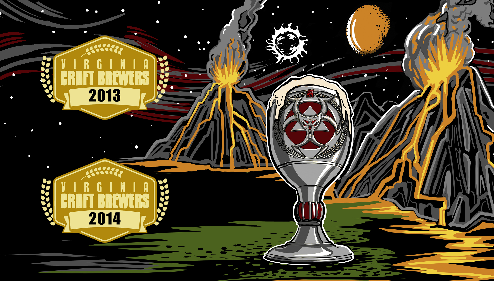

Glorious Dead
English Amber Ale

Made with the finest English malts and hops. Maris Otter and crystal malts give this rich mahogany ale mouth watering caramel maltiness.The English Challenger and Kent Golding hops impart herbal flavors and aromas that finish gloriously smooth and mellow.
ABV: 6.2% IBUs: 35
6th seal
Chocolate Stout

A rich sweet chocolate stout fermented with
cacao nibs to enhance the rich chocolate presence. Nose includes chocolate,
hints of orange, toffee and coffee.
Gold Medal VA Craft Brewers Cup 2013.
Gold Medal VA Craft Brewers Festival 2014.
ABV: 7.5% IBUs: 20